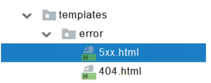

SpringBoot2-Web开发-异常处理+原生组件注入
11 19, 2021
SpringBoot Web开发
异常处理
默认规则
默认情况下，SpringBoot提供 /error 处理所有错误的映射
对于机器客户端，生成JSON响应，其中包含错误、HTTP状态和异常消息的详细信息。对于浏览器客户端，响应一个whitelabel错误视图，以HTML格式呈现相同的数据
要对其进行自定义添加View解析为error
要完全替换默认行为，可以实现ErrorController并注册该类型的Bean，或添加ErrorAttributes类型的组件以使用现有机制但替换其内容
/error/下的4xx、5xx页面会被自动解析

原生组件注入(Servlet, Filter, Listener)
两种方法：
1. 使用Servlet API（推荐）
@ServletComponentScan(basePackages = “xxx.xxx”): 指定原生Servlet组件的路径
@WebServlet(urlPatterns = “/xxx”): 效果：直接响应，不经过Spring的拦截器
@WebFilter(urlPatterns = {“/css/※”, “/images/※’”})
@WebListener
2. 使用RegistrationBean
ServletRegistrationBean, FilterRegistrationBean, ServletListenerRegistrationBean.
1
2
3
4
5
6
7
8
9
10
11
12
13
14
15
16
17
18
19
20
21
22
23
24
25
26
27
28
|
@Configuration
public class MyRegistConfig {
@Bean
public ServletRegistrationBean myServlet(){
MyServlet myServlet = new MyServlet();
return new ServletRegistrationBean(myServlet,"/my","/my02");
}
@Bean
public FilterRegistrationBean myFilter(){
MyFilter myFilter = new MyFilter();
FilterRegistrationBean filterRegistrationBean = new FilterRegistrationBean(myFilter);
filterRegistrationBean.setUrlPatterns(Arrays.asList("/my","/css/*"));
return filterRegistrationBean;
}
@Bean
public ServletListenerRegistrationBean myListener(){
MySwervletContextListener mySwervletContextListener = new MySwervletContextListener();
return new ServletListenerRegistrationBean(mySwervletContextListener);
}
}
|